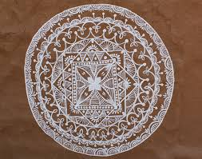

Introduction
Where Art Meets Ecology
For the Sahariya, visual art is inseparable from spiritual life, ecological knowledge, and community memory. Unlike art made for display, Mandana is made for use — to mark transitions, invite protection, and communicate with forces beyond human sight.
These forms are created primarily by women, who carry the knowledge of patterns, materials, and meanings across generations. Their practice is simultaneously artistic, ritual, and scholarly — a form of living research into the nature of the world.



Mandana Paintings
Ritual Art on Wall and Floor
Mandana are ritual paintings applied to the walls and floors of homes during festivals, harvests, marriages, births, and deaths. They are made using natural pigments—primarily red ochre on white lime ground—and created freehand by women with practiced hands.
The word "Mandana" derives from the Sanskrit root for "to adorn," but in practice these works function less as decoration and more as invitation: they welcome deities, mark the sanctity of a space, and establish the cosmological coordinates of an event.
Mandana are ephemeral by design. They are made to be renewed—and this renewal is itself a ritual act. Each application is both a repetition of ancient forms and a new act of creation, keeping the tradition alive in the present tense.
Documentation from Shahabad and Kishanganj blocks, Baran district · 2022–2024
Materials & Technique
Colours from the Earth
The Sahariya approach to art-making reflects a deep ecological sensibility. Every material is locally sourced, and the act of preparation is itself a ritual — gathering, grinding, and mixing with intention.
Red Ochre (Geru)
The primary pigment in Mandana, sourced from iron-rich clay deposits. It symbolises vitality, auspiciousness, and the warmth of the earth. Applied to walls, it provides the dominant ground colour against which white designs are drawn.
White Lime (Khadia)
Ground limestone or chalk used to paint patterns onto the red ochre base. The stark white against terracotta creates the characteristic visual rhythm of Mandana. Lime also has protective, purifying significance in ritual contexts.
Black Carbon
Used for detailing and outlines in certain traditions. Derived from soot or charred plant material, black carbon adds contrast and is associated with warding off negative forces.
Plant-Based Dyes
Certain festivals call for colours beyond the standard palette — turmeric yellows, indigo blues, and greens from local vegetation are incorporated into expanded compositions.
Clay Ground
Walls and floors are prepared with a fresh clay wash before painting. This preparation is itself part of the ritual, marking the transformation of domestic space into sacred space.
Application Methods
Paintings are applied freehand using fingers, cloth pads, or thin sticks. The absence of stencils or rulers means that each work is a direct expression of the maker's embodied knowledge of form and proportion.
Symbolism
A Visual Language
Mandana motifs form a visual vocabulary that community members can read and interpret. They are not abstract in the Western sense — each element carries specific meaning and functions within a larger symbolic grammar.
Concentric Circles
Cosmic order, the sun, cycles of time and seasonal renewal.
Triangles
Fertility, the relationship between earth, water, and sky.
Nested Squares
Protection, stability of the home, containment of sacred energy.
Lotus / Petals
Purity, spiritual aspiration, the divine feminine principle.
Wave & River
Water as life force, seasonal flow, the journey between worlds.
Cross / Axis
The four directions, balance, the meeting point of heaven and earth.
Tree of Life
Ancestral memory, rootedness, the connection of generations.
Peacock
Beauty, monsoon rain, joy, and the blessing of abundance.
"When I paint Mandana, I am not inventing — I am remembering. The patterns come from my hands, but they belong to everyone."
— Sahariya Woman Artist, Shahabad